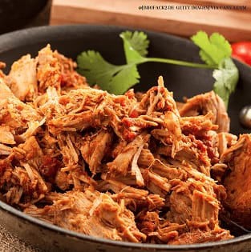

Ajiaco
Sobre
Um prato muito famoso, não somente em Cuba, como também em outros países latinos.
A sua base é bem básica, leva: batata, frango e milho. No entanto, as batatas que são
utilizadas neste prato são originais de Cuba. Além disso, os cubanos costumam usar muitas
ervas nativas. Sendo assim, nesse prato especificamente vai uma erva chamada Guasca.
R$ 0,00
FAZER O PEDIDO
Arroz Con pollo

Sobre
Um dos pratos mais comuns e falado de Cuba. Ele é uma mistura de ingredientes, como
todo prato cubano. O diferencial desse prato é a cor amarelada do arroz, ela fica com essa coloração,
pois é misturada e cozida com Achiote. Deste modo, o acompanhante principal desse arroz é o frango,
que também é cozido com o arroz.
R$ 0,00
FAZER O PEDIDO
Ropa Vieja

Sobre
Um prato bem tradicional e básico. A sua aparência não é muito agradável e muito menos o seu
nome, mas o sabor é excelente. Vale super a pena experimentar! Os ingredientes são: carne de vaca
desfiada misturada com arroz branco, feijão e salada para fechar o prato. Além disso, o grão de bico é
algo fundamental também nessa refeição.
R$ 0,00
FAZER O PEDIDO